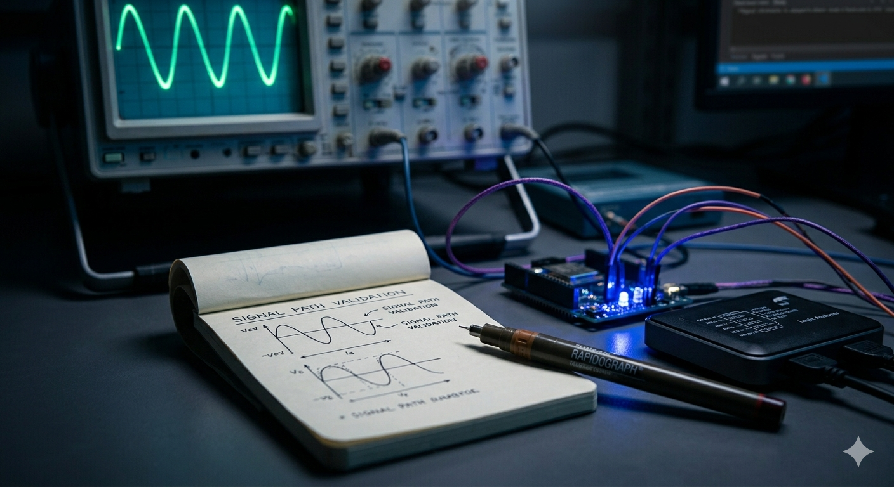

In the quiet intensity of a late-night electronics lab, success is rarely defined by the final output. The light might turn on. The motor might spin. But in engineering, if you cannot explain *why* it is working, or *how* the signal propagated, you haven’t succeeded; you’ve just been lucky. This analytical rigor, refined while troubleshooting circuits, is a lesson I carry directly into my work as a Computer Science student and a freelance technical writer.
My academic path often requires balancing seemingly divergent skill sets. One afternoon might be spent debugging a C# interface, optimizing SQL queries (where logical structure is everything), while the next is dedicated to validating signal integrity in a hardware lab. We often treat these as different disciplines, but the core engineering philosophy is identical.
The Unique Engineering Lesson: Validity vs. Output
This insight solidified during a complex circuits lab. We were tasks with validating the behavior of a specific filter. My light came on, indicating the signal was active. I assumed I was finished. But my lab supervisor challenged me: "The light is on, but the interface isn't validated. Where is the noise floor? Where is the documentation proving the frequency response?"
I realized I was treating the *output* (the light) as the *result*. The true result was the validated documentation of the signal path.
This experience redefined success for me. I stopped aiming for completion and started aiming for transparency.
Applying the Signal Path Logic to Content Writing
As a freelance technical writer, I apply this 'signal path logic' to every script or documentation project. Just as an engineer cannot leave gaps in their circuit diagram, a writer cannot leave logical gaps in their explanation.

When I document a complex software interface, I am doing more than listing functions. I am mapping the path the user takes. I have to identify potential points of failure (noise) and ensure the message structure is precise (the frequency response). My engineering background gives me the rigor to dissect technical concepts, and my writing background gives me the clarity to articulate the validated path.
Success, I’ve learned, is the interface itself: the clean, validated structure that proves the path from raw signal to meaningful output, whether that path is executed in silicon, defined in SQL, or written in words.